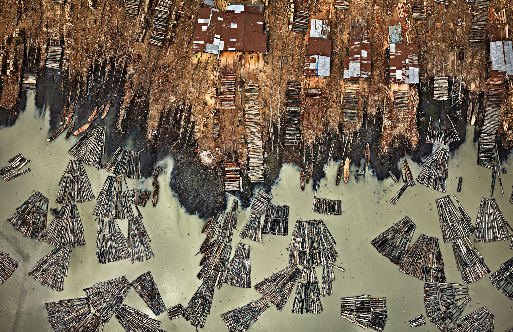
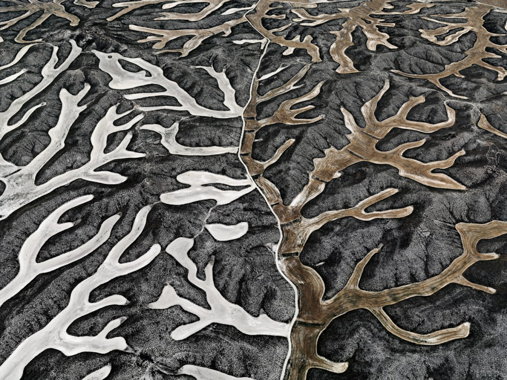
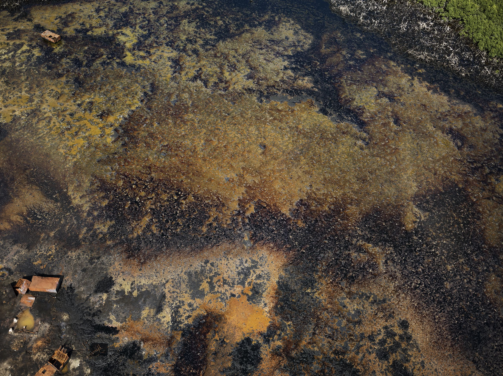
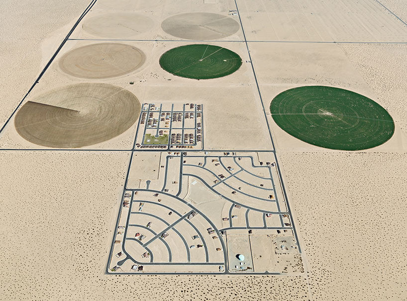
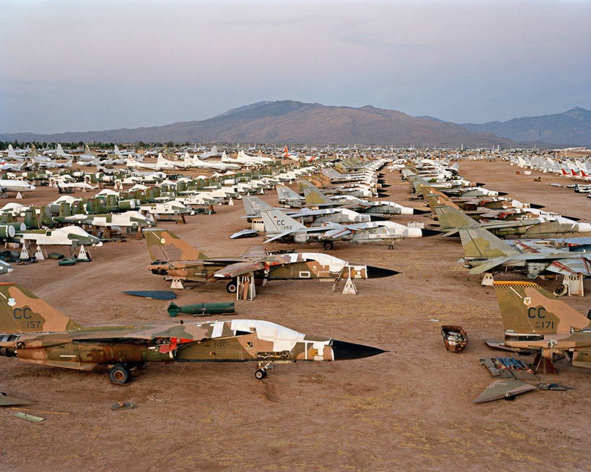
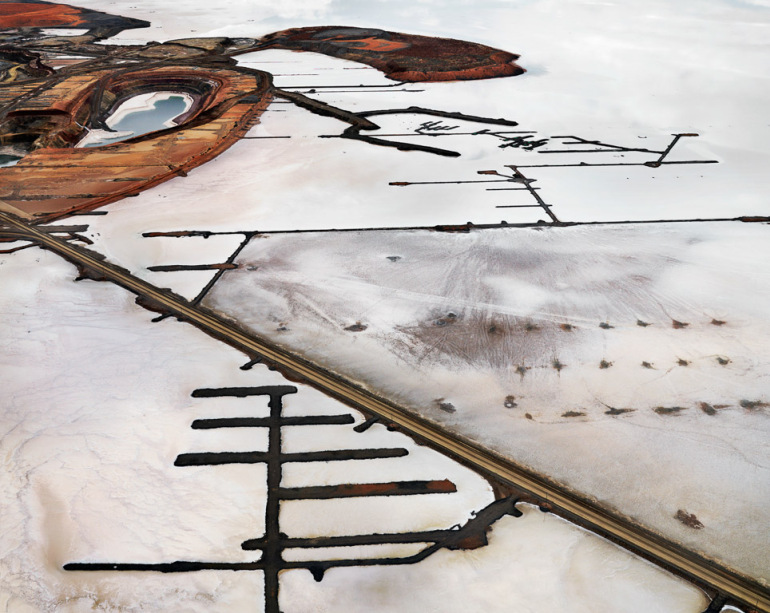

Raffi Khatchadourian
Edward Burtynsky
Photography
Natural
Terrifying
Capitalist
Suburban
(…) throughout his career, Burtynsky has used his camera to create painterly abstractions as often as he has to create sublime imagery. While working on “Water,” he wrestled with the sprawling and complex nature of the subject, and found himself seeking higher and higher vantage points. In India, he used a hydraulic pole to shoot an overhead view of a religious festival on the Ganges that attracts tens of millions of people. Eventually, he left the ground entirely, using helicopters and fixed-wing airplanes. As he drifted upward, his images became flatter, stranger: visual puzzles. (…)
As Burtynsky increasingly makes use of aerial photography, his images have become flatter, stranger: visual puzzles. In Lagos, while reviewing overhead shots of sawmills processing rain-forest timber, he said, “People will like those. You don’t know what it is.”
     